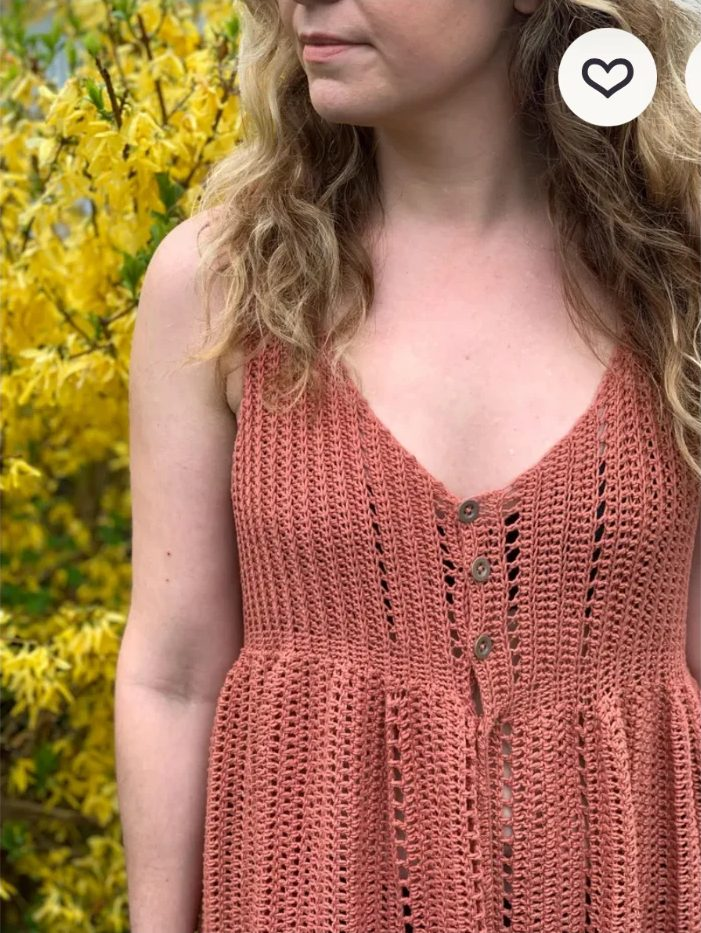
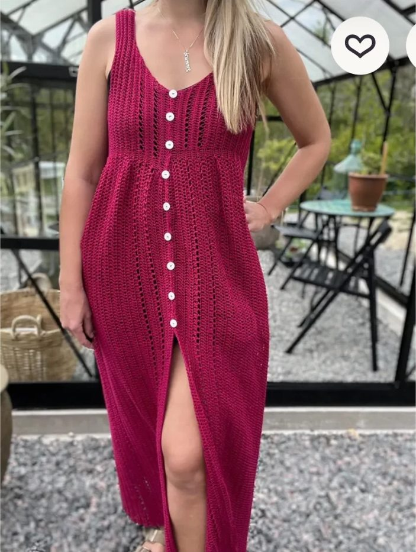
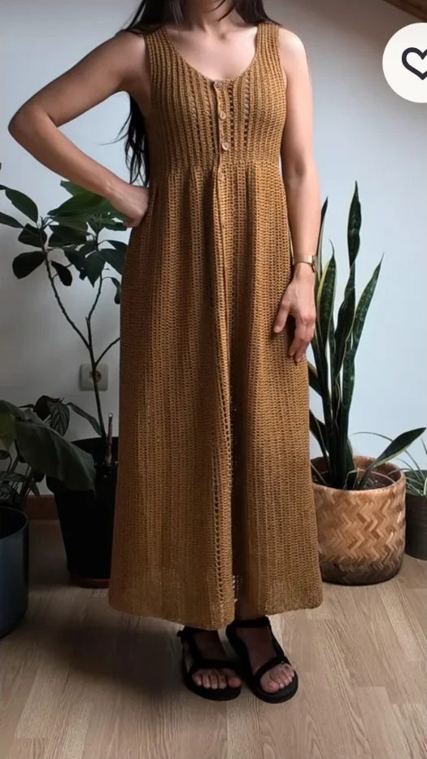
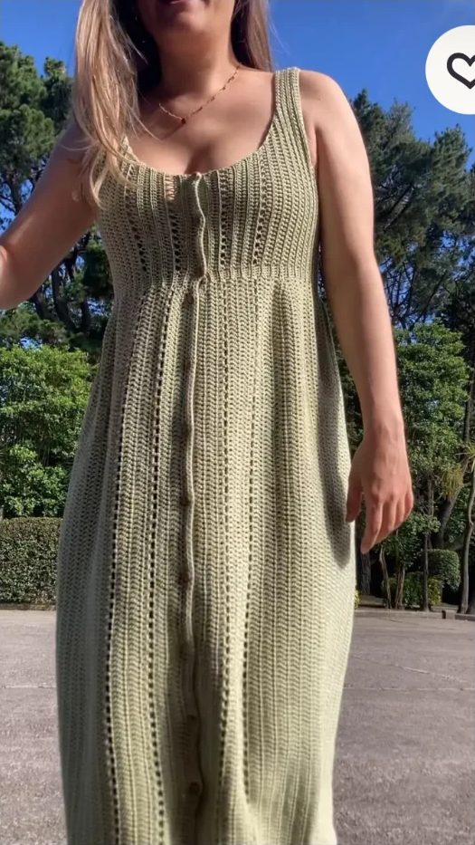
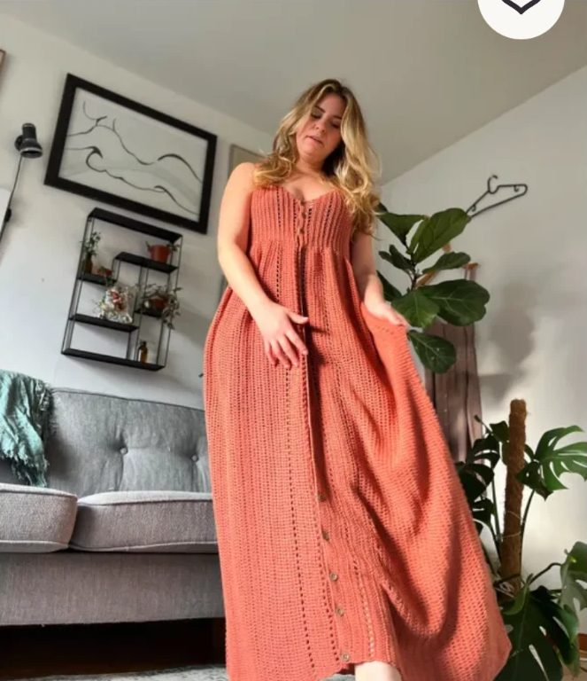
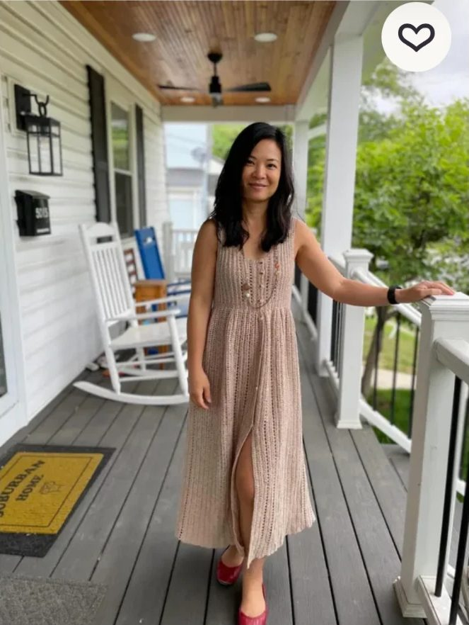
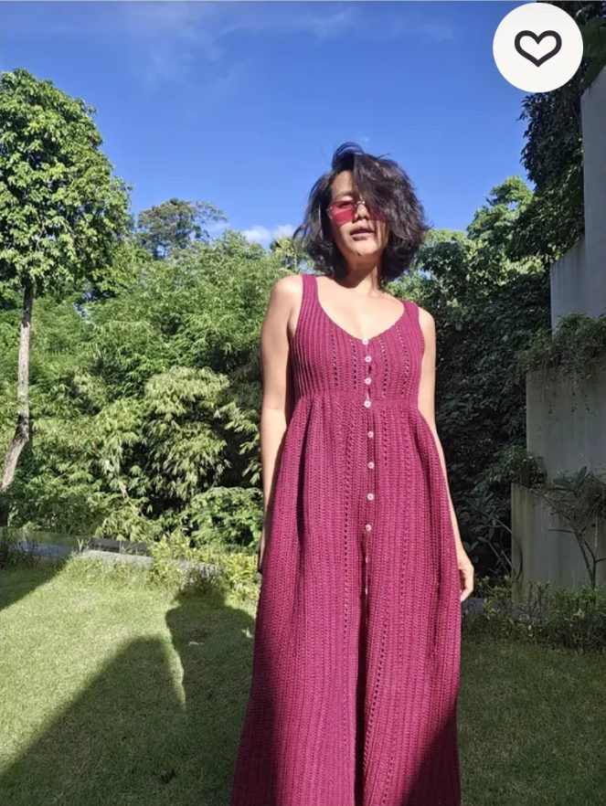

Пошаговая инструкция по мотивам платья Harriet (LisettesCrochet). Это не оригинальная выкройка автора, а самостоятельный расчёт в той же технике. Если нужна точная авторская версия, её можно купить на Etsy за 9,67 € (на английском).







Фото: примеры работ по выкройке Harriet (Etsy, LisettesCrochet).
Как устроено платье
Лиф из трёх деталей: спинка и две полочки. Высота под грудью 18 см, на полочках поднимается к бретели и уходит в V-вырез.
Юбка из трёх прямоугольников: спинка и две полочки. Она в 1,4 раза шире лифа и присобрана к нему по линии под грудью.
Все детали вяжутся «набок»: цепочка задаёт высоту, ряды наращивают ширину. Поэтому рубчик встаёт вертикально.
По центру переда идёт планка на пуговицах по всей длине. Нижние пуговицы можно не застёгивать, тогда получится разрез.
Полупетли за заднюю стенку при вязании туда-обратно выглядят одинаково с обеих сторон. Поэтому левая и правая полочки — одинаковые детали: одну просто переворачивают при сборке.
Мерки размера 52–54 и готовые размеры
Мерка тела
52
54
В готовом платье
Обхват груди
104 см
108 см
лиф по груди 106 см (рубчик тянется вширь)
Обхват под грудью
≈ 90 см
≈ 94 см
нижний край лифа 106 см, его стягивает рубчик и сборка юбки
Обхват бёдер
110 см
114 см
юбка 150 см по кругу, свободно
Длина юбки
от линии под грудью до щиколотки
100 см (макси при росте 165–170); для миди — 80 см
Если обхват груди больше 108 см: добавьте по 1 ряду в прямую часть каждой полочки (ряды 12–18) и по 1 ряду с каждого края спинки. Лиф станет шире на ≈ 3,6 см.
Пряжа и инструменты
Пряжа (один из вариантов)
Drops Belle: хлопок 53 %, вискоза 33 %, лён 14 %, 120 м/50 г. Матовая и мягкая, больше всего похожа на фото. Крючок 4 мм.
Drops Muskat: 100 % мерсеризованный хлопок, 100 м/50 г. Чёткий рельеф, лёгкий блеск. Крючок 4 мм.
YarnArt Jeans: хлопок 55 %, акрил 45 %, 160 м/50 г. Бюджетный вариант, ткань чуть тоньше. Крючок 3,5 мм.
Сколько: ориентир для макси 900–1000 г, то есть 18–20 мотков Belle. Для миди — около 750 г. Точный расход посчитайте по образцу (шаг 1). Берите пряжу из одной партии и ещё 1 моток про запас.
Инструменты
Крючок 4 мм для основного вязания (3,5 мм для Jeans). Удобнее с эргономичной ручкой: Clover Amour, Tulip Etimo.
Крючок 3,5 мм для обвязки и планок.
13–14 пуговиц диаметром 15 мм (дерево или кокос, как на фото) и 1 запасная.
Маркеры для петель, 10–15 шт.
Игла с тупым концом для сборки.
Булавки, сантиметровая лента.
Нитки в цвет для пришивания пуговиц.
Обозначения
в.п.
воздушная петля
сбн
столбик без накида
пст
полустолбик: накид, вытянуть петлю, протянуть через все 3 петли на крючке (англ. hdc)
ст.с н.
столбик с накидом (англ. dc)
ЗП
за заднюю полупетлю (англ. BLO)
с.ст.
соединительный столбик
Две базовые схемы
Схема 1. Рубчик
Цепочка = высота детали + 1 в.п.
Ряд 1: пст во 2-ю петлю от крючка и в каждую петлю цепочки, поверните.
Ряд 2 и далее: 1 в.п. подъёма (не считается петлёй), пст ЗП в каждую петлю.
Последний пст — за обе полупетли (ровный край). Поверните.
Схема 2. Ажурная дорожка
При вязании набок вертикальная дорожка — это один ажурный ряд между рядами рубчика.
Ажурный ряд: 3 в.п. подъёма (= 1-й ст.с н.), *1 в.п., пропустить 1 петлю,
1 ст.с н. ЗП в следующую*, повторять от * до конца, поверните.
Следующий ряд: 1 в.п. подъёма, пст ЗП в каждый столбик и пст в каждую арку
из в.п. (под петлю). Число петель не меняется.
Так выглядит фрагмент из 18 рядов: 8 рядов рубчика, ажурный ряд, ещё 8 рядов рубчика, второй ажурный ряд. Стрелки показывают направление вязания ряда.
Пошагово
1
Образец и плотность
Наберите 27 в.п. и свяжите 18 рядов по схемам: 8 рядов рубчика, ажурный ряд, 8 рядов рубчика, ажурный ряд. Постирайте образец, отожмите в полотенце и высушите на горизонтальной поверхности.
Расчёт сделан на плотность: 17 пст = 10 см вдоль цепочки и 11 рядов = 10 см поперёк рядов.
Если у вас получилось иначе, пересчитайте все числа по формулам:
петли цепочки = нужные см × (ваши петли в 10 см) ÷ 10
ряды = нужные см × (ваши ряды в 10 см) ÷ 10
Расход пряжи: взвесьте образец, пересчитайте его вес на квадрат 15×15 см и умножьте на 80. Это общая площадь платья (≈ 18 000 см²).
Хлопок в крючке под своим весом вытягивается в длину на 5–7 %. Повесьте влажный образец на прищепках на час и измерьте ещё раз. Если он вытянулся, сделайте юбку на 5 см короче.
2
Как прибавлять и убавлять у верхнего края
Перед началом каждой детали повесьте маркер на тот край, который станет верхним (у бретелей и выреза).
Прибавка 1 петли, если ряд заканчивается у верхнего края: провяжите 2 пст в последнюю петлю.
Прибавка 1 петли, если ряд начинается у верхнего края: наберите 2 в.п. вместо 1 и первый пст провяжите во 2-ю в.п. от крючка.
Убавка N петель, если ряд начинается у верхнего края: пройдите с.ст. по N петлям, затем 1 в.п. подъёма и продолжайте.
Убавка N петель, если ряд заканчивается у верхнего края: не довязывайте последние N петель, поверните.
Цепочка: 31 + 1 в.п. → ряд 1: 31 пст.
Ряды 2–11: в каждом ряду +1 петля у верхнего края → 41 п. (24 см). Это пройма.
Ряды 12–18: без прибавок, 41 п. Ряды 15–18 — место бретели.
Ряды 19–28: в каждом ряду −2 петли у верхнего края → 21 п. (12 см). Это V-вырез.
Ажурные ряды: 8 и 26 (убавки в ряду 26 делайте как обычно).
Ширина полочки ≈ 25,5 см. Последний ряд — это центральный край, к нему потом привяжется планка.
5
Сборка лифа
Сшейте боковые швы: край цепочки полочки с последним рядом спинки и первый ряд спинки с краем цепочки второй полочки. Сшивайте матрасным швом или с.ст. через обе детали. Вторую полочку переверните, чтобы V-вырезы смотрели к центру.
Нижний край лифа обвяжите сбн крючком 3,5 мм: 1 сбн в конец каждого ряда. Должно получиться ≈ 114 сбн.
6
Юбка
Цепочка для всех деталей: 170 + 1 в.п. → 170 пст (100 см; для миди 136 п. = 80 см).
Спинка юбки: 83 ряда (≈ 75 см). Ажурные ряды: 10, 20, 30, 42, 54, 64, 74.
Полочки (×2): 40 рядов (≈ 36 см). Ажурные ряды: 10, 20, 30, 37.
Начинайте от бокового шва: последний ряд — центральный край.
Отметьте маркером, какой край цепочки будет поясом, а какой — подолом. Если хотите лёгкий А-силуэт, вставляйте укороченные ряды: каждые 16 рядов вяжите пару рядов (туда и обратно) только по нижним 110 петлям. В счёт рядов они не входят. Подол станет шире на 15–18 см.
7
Сборка юбки и соединение с лифом
Сшейте боковые швы юбки так же, как у лифа.
Верхний край юбки обвяжите сбн со сборкой: на каждые 10 концов рядов — 7 сбн. Из 163 рядов получится ≈ 114 сбн, столько же, сколько у лифа.
Совместите боковые швы и центральные края, сколите булавками через каждые 10 см.
Соедините лиф и юбку: сбн через обе детали с изнанки или потайным швом иглой.
8
Планки и петли для пуговиц
По центральному краю каждой полочки (лиф и юбка вместе, ≈ 112 см) провяжите крючком 3,5 мм 7 рядов сбн, 1 сбн в каждую петлю края. Ширина планки ≈ 3 см.
На правой планке (для женской застёжки) в 4-м ряду сделайте петли:
2 сбн, *2 в.п., пропустить 2 петли, 12 сбн* — повторять до конца.
В 5-м ряду в каждую арку из 2 в.п. провяжите 2 сбн.
Получится 13 петель с шагом ≈ 8 см. Первая — в 1 см от верха V-выреза.
9
Бретели (2 шт.)
Цепочка: 7 + 1 в.п. → 7 пст (ширина 4 см).
Рубчик до длины ≈ 38 см (≈ 42 ряда).
Пришейте бретели к полочкам (ряды 15–18). Примерьте платье и только потом пришейте к спинке (ряды 13–17 и 42–46). Длину подгоните по фигуре: обычно 36–42 см.
10
Обвязка и финиш
Верхний край (спинка, проймы, V-вырез, верх планок) обвяжите 1 рядом сбн крючком 3,5 мм. Можно добавить ряд рачьим шагом для плотного края.
Подол обвяжите 1–2 рядами сбн: 1 сбн в конец каждого ряда.
Пришейте пуговицы напротив петель.
Постирайте платье при 30 °C в режиме деликатной стирки или вручную. Высушите разложенным на горизонтальной поверхности: не вешайте, иначе вытянется.
Перед началом проверьте
Образец связан, постиран и измерен, числа пересчитаны под вашу плотность.
Пряжа из одной партии, есть запасной моток.
Длина юбки примерена на себе: от линии под грудью до нужной точки.
Пуговицы куплены до того, как вязать планку: под них подбирается размер петли.